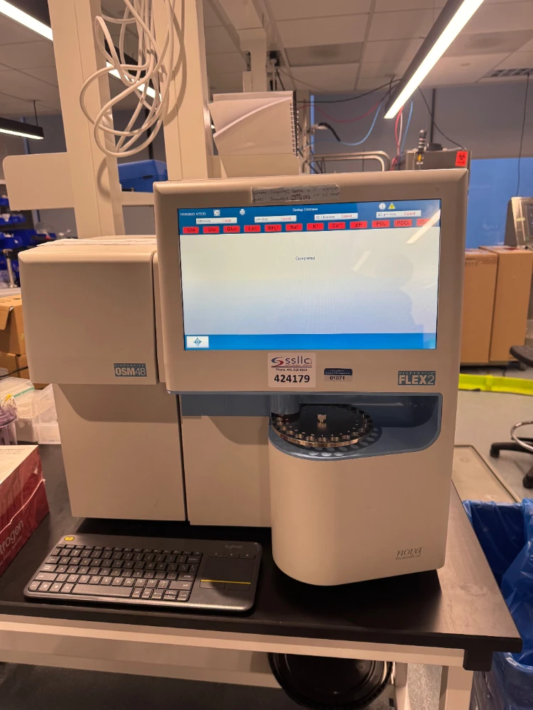
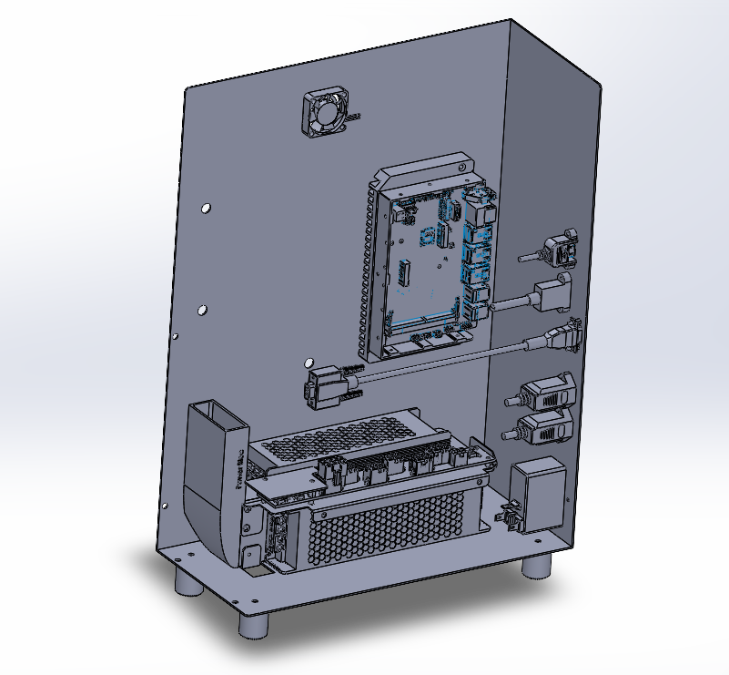
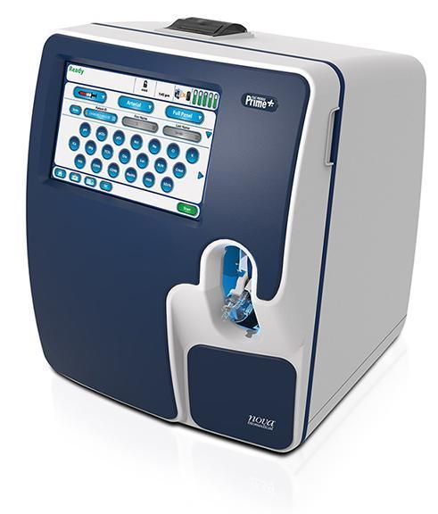
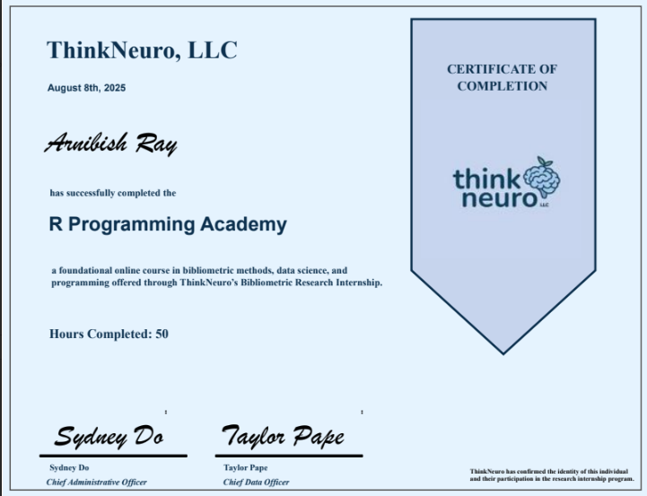

Industry Experience
Co-ops and internships in mechanical engineering, systems testing, and public service.
Supported development and testing of biomedical diagnostic equipment, including formal verification and validation testing on the BioProfile FLEX2, a biotech analyzer used to monitor cell culture conditions. Ran instruments under different test conditions, checked hardware and software behavior (alerts, sample handling, mechanical response) against expected results, and documented outcomes.
Troubleshot failures across mechanical setup, software, sensors, and wiring to find root cause, helped build test fixtures and jigs for repeatable testing, and kept traceable documentation required for regulated medical devices. Also gained exposure to engineering change orders and how mechanical, electrical, software, and quality teams coordinate on product changes.



Three roles across language access and digital literacy support.
Helped make city information and services accessible to residents who speak different languages. Organized multilingual materials, reviewed public-facing content, and supported translation and interpretation between departments and residents.
Helped residents work through barriers with technology, internet access, and online public services, while handling more complex cases and helping guide the rest of the Digital Navigator team.
Reviewed scientific literature on neuroscience and mental health treatment, comparing ketamine-based treatments with traditional SSRIs across mechanisms, response timelines, and clinical use. Also ran bibliometric analysis on publication data to identify research trends and influential papers.
